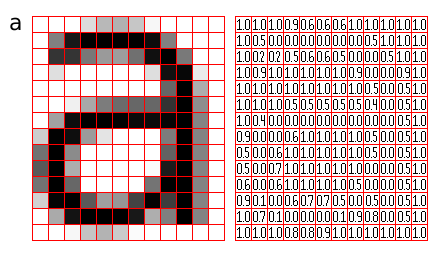
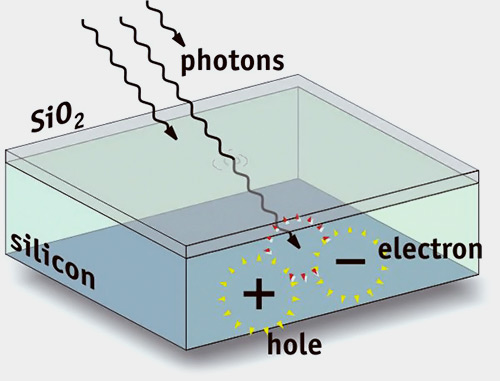

Procesamiento de imágenes digitales
Contenido
from IPython.display import YouTubeVideo
from functools import partial
YTVideo_formato = partial(YouTubeVideo, width=640, height=400, rel=0, modestbranding=1)
4. Procesamiento de imágenes digitales¶
En esta lección veremos:
Imágenes son señales bidimensionales
Definición de una imagen digital
Percepción humana y modelos de color
4.1. Una imagen como caso particular de una señal 2D¶
El siguiente es un ejemplo de una señal que tiene dos variables independientes
YTVideo_formato('AEJgW2jUdMs')
Importante
Podemos interpretar las variables independientes \(x\) e \(y\) como coordenadas en el espacio, donde la variable dependiente \(I(x,y)\) se visualuza como un mapa de colores
Bajo estas consideraciones se obtiene lo que llamamos una imagen. A continuación definiremos formalmente una imagen
4.2. Definiendo una imagen digital¶
Una imagen digital es una señal con:
Dos variables indepedientes discretas \(x\) e \(y\) que representan el espacio
Una o más variables dependientes \(I(x,y)\) que representan la intensidad del color según una codificación
En la práctica las imágenes digitales son un arreglo de NxM componentes
\(N\), el número de filas, que podemos interpretar como el alto de la imagen
\(M\), el número de columnas, que podemos interpretar como el ancho de la imagen
Nota
Cada elemento del arreglo se llama pixel (picture element)
Los píxeles pueden ser
unidimensionales (imagen en blanco y negro)
multidimensionales (RGB, HSV, HSL)
Un pixel suele representarse como una tupla de enteros de 8 bit sin signo, i.e. la intensidad está en el rango \([0, 255]\). Otra representación común es una tupla de valores flotantes en el rango \([0.0, 1.0]\). A estos rangos les otorgamos una interpretación como mapa de color
En la siguiente figura podemos ver una imagen digital en escala de grises
{kind=link}
A la izquierda: Representación en mapa de color, donde negro es 0.0 y blanco es 1.0
A la derecha: Representación numérica
Atención
¿Qué representa una imagen?
Comúnmente una imagen es una representación de la intensidad lumínica en el rango óptico
Pero también se pueden representar otros rangos de radiación como los rayos X (radiografía), la radiación infraroja (termografía) y otros fenómenos que no son electromagnéticos, por ejemplo un ultrasonido

|

|

|
 |
*Todas las imágenes de esta lámina son de wikipedia
Atención
¿Cómo se obtiene una imagen digital?
Para el caso electromagnético se aprovecha el efecto fotoeléctrico, es decir los electrones que se desprenden de un material semi-conductor cuando un fotón los impacta, como muestra la siguiente figura
{kind=link}
Nota
Hoy en día las cámaras digitales, webcams, celulares y también microscopios y telescopios utilizan tecnologías Charged Coupled Device (CCD) y Complementary Metal-Oxide Semiconductor (CMOS) para capturar imágenes digitales
{kind=link}
Un sensor CCD está dividido en una grilla y cada elemento de la grilla “cuenta” los fotones que lo golpean. Luego la cuenta se mapea como un valor numérico entero o flotante. Los receptores pueden ajustarse para aceptar fotones de un cierto rango de frecuencias (color)
4.3. Manipulación de imágenes con Python¶
Hay bastantes opciones para manipular imágenes con Python. Sin embargo en este curso utilizaremos principalmente la librería OpenCV y en menor medida la librería pillow.
OpenCV es una librería de visión computacional que incluye funcionalidad para leer, procesar, filtrar y realizar inteligencia artificial con imágenes. Además se caracteríza por ser sumamente eficiente, es una librería escrita en C++ con bindings para Python y otros lenguajes
El siguiente ejemplo muestra como leer una imagen con OpenCV
import cv2
valdivia = cv2.imread('data/valdivia.jpg')
Si estudiamos en mayor detalle que es lo que obtuvimos:
print(f"Tipo: {type(valdivia)}")
print(f"Tamaño: {repr(valdivia.shape)}")
print(f"Tipo: {valdivia.dtype}")
Tipo: <class 'numpy.ndarray'>
Tamaño: (350, 650, 3)
Tipo: uint8
Hemos obtenido un tensor de 350 filas, 650 columnas y 3 canales
Importante
Los datos de la imagen se recuperan como una estructura ndarray de la librería NumPy. Esto nos habilita para hacer todo tipo de manipulación numérica con la imagen como si está fuera una matriz
Visualizemos la imagen que acabamos de importar
from PIL import Image
Image.fromarray(valdivia) # Para mostrar la imagen en el cuadernillo

Los colores están un poco extraños
Advertencia
La librería OpenCV utiliza como convensión de canales el estándar BGR (Blue-Green-Red). Mientras que pillow y otras librerías esperan una imagen en RGB.
Podemos cambiar de estándar de canal con la función cvtColor y el flag adecuado como se muestra a continuación
valdivia = cv2.cvtColor(valdivia, cv2.COLOR_BGR2RGB)
Image.fromarray(valdivia)
Como ya se dijo, una vez importada podemos operar con la imagen como su fuera cualquier otro tensor en formato ndarray
Por ejemplo podemos tomar un trozo o slice de la imagen con
centro_de_valdivia = valdivia[50:200, :200]
Image.fromarray(centro_de_valdivia)
O podríamos espejar la imagen inviertiendo su eje horizontal
Image.fromarray(valdivia[:, ::-1, :])
4.4. Modelo de color RGB¶
La imagen que estabamos usando tiene tres canales y cada canal se interpreta como la intensidad de color
en rojo
en verde
en azul
respectivamente
Esto corresponde al modelo de colores RGB (red, green, blue)
Combinando distintos valores de intensidad en rojo, verde y azul se obtienen los demás colores
Podemos visualizar cada canal por separado como una imagen en escala de grises, por ejemplo
sub_valdivia = valdivia[200:, : :]
Image.fromarray(sub_valdivia[:, :, 0])
Image.fromarray(sub_valdivia[:, :, 1])
Image.fromarray(sub_valdivia[:, :, 2])
4.5. Visión humana¶
El ojo humano tiene en su retina dos tipos de fotoreceptores: bastones y conos
Los bastones
120 millones aprox en la retina
Perciben intensidad pero no color
Requieren poco brillo para producir una señal
Tienen baja agudeza (menos sencibles a los detalles)
Los conos
6 millones aprox en la retina
Existen tres tipos de conos, cada uno sintonizado a una longitud de onda
Requieren mucho brillo para producir una señal
Tienen alta agudeza visual
{kind=link}
Referencia: http://www.danielgmurphy.com/physics/1_intro/contents_phyics1.html
La respuesta retinal inspira la siguiente transformación de RGB a escala de grises:
Esta transformación está implementada en OpenCV. Para convertir una imagen a color a escala de grises utilizamos
valdivia = cv2.imread('data/valdivia.jpg')
valdivia_bw = cv2.cvtColor(valdivia, cv2.COLOR_BGR2GRAY)
Image.fromarray(valdivia_bw)
4.6. Otros modelos de colores¶
RGB no es el único modelo de color. Por ejemplo el modelo HSV (Hue, Saturation, Value) es muy usado en software de diseño y computación gráfica
Hue: Corresponde al tono o color puro
Saturation: Corresponde a ajustar el brillo
Value: Corresponde a mezclar con negro para generar sombras
{kind=link}
Por ejemplo, la imagen anterior en HSV
valdivia = cv2.imread('data/valdivia.jpg')
sub_valdivia_hsv = cv2.cvtColor(valdivia[200:, : :], cv2.COLOR_BGR2HSV)
Image.fromarray(sub_valdivia_hsv[:, :, 0])
Image.fromarray(sub_valdivia_hsv[:, :, 1])
Image.fromarray(sub_valdivia_hsv[:, :, 2])
El estándar YCbCr corresponde a una familia de modelos muy usado en fotografía digital
Y, se llama luma, corresponde a la luminancia
Cb y Cr, se llaman chroma, corresponde a la “diferencia en azul” y “diferencia en rojo”
Existe una transformación directa entere YCbCr y RGB
donde \(K_R + K_G + K_B = 1\)
Los distintos modelos de la familia YCbCr se diferencia en sus valores de \(K_R\), \(K_G\) y \(K_B\)
Por ejemplo la imagen anterior en YCbCr
valdivia = cv2.imread('data/valdivia.jpg')
sub_valdivia_YCbCr = cv2.cvtColor(valdivia[200:, : :], cv2.COLOR_BGR2YCrCb)
Image.fromarray(sub_valdivia_YCbCr[:, :, 0])
Image.fromarray(sub_valdivia_YCbCr[:, :, 1])
Image.fromarray(sub_valdivia_YCbCr[:, :, 2])